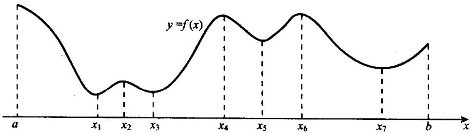
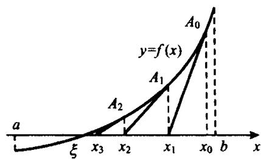
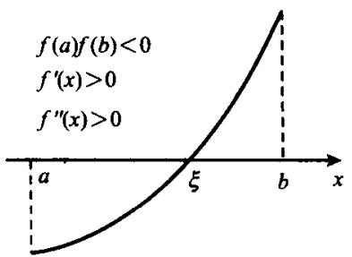
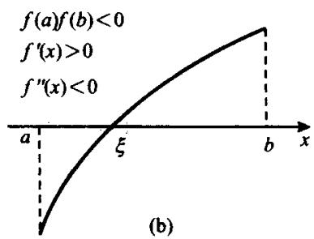
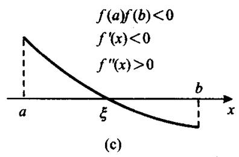
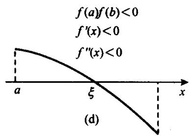

§5.1 微分中值定理
微分中值定理是反映函数与导数之间联系的重要定理, 共有三个定理, 但其中最主要的, 也是用得最多的定理是拉格朗日中值定理, 即本节定理5.1.3. 在讲述中值定理之前, 先给出一个预备定理.
定理 5.1.1(费马, Fermat) 设函数 在点 的邻域 中有定义, 在点 x_{0核心定理
定理 5.1.1(费马, Fermat) 设函数 在点 的邻域 中有定义, 在点 可导且有
则
证 因为 在点 可导, 故在点 的左右导数都存在且相等. 又因为证明
证 因为 在点 可导, 故在点 的左右导数都存在且相等. 又因为
所以
定理 5.1.2(罗尔, Rolle) 设 在 上连续，在 中可导，且 ，则存在 核心定理
定理 5.1.2(罗尔, Rolle) 设 在 上连续，在 中可导，且 ，则存在 ，使得 .
证 若 在 上恒为常数，则结论显然成立。当 在 上不恒为常数时，其最大值大于最小值。又因 f(证明
证 若 在 上恒为常数，则结论显然成立。当 在 上不恒为常数时，其最大值大于最小值。又因 ，所以 的最大值和最小值至少有一个在区间 内取得，不妨设有 ，使得 为 在 上的最大值。于是由定理5.1.1知 。
从几何上看, 这个定理说的是若连结光滑曲线上两点的弦 平行于 轴, 则两点之间的曲线上必有另一点, 使曲线过这点的切线平行于 轴, 当然也平行于弦 . 当弦 不平行于 轴时, 类似的结果照样成立, 这就是下面的拉格朗日 (Lagrange) 中值定理.
定理5.1.3 设 在 上连续，在 中可导，则存在 ，使得核心定理
定理5.1.3 设 在 上连续，在 中可导，则存在 ，使得
证令
于是 在 上连续，在 中可导且 . 从而由罗尔定理知存在 , 使得 , 又因
所以
当然可以考虑定理5.1.3的逆命题：设 在 上连续，在 中可导，试问对任意 ，是否必有 ，使得
显然, 答案是否定的. 例如 , . 这时 , 而函数 严格递增, 对于任何 , 都不可能有 .
这表明定理5.1.3的逆定理不成立.
定理 5.1.4(柯西, Cauchy) 设 和 都在 上连续，在 中可导且当 x \in (核心定理
定理 5.1.4(柯西, Cauchy) 设 和 都在 上连续，在 中可导且当 时， ，则存在 ，使得
证 若 , 则由罗尔定理知存在 , 使得 , 此与已知矛盾, 故知 证明
证 若 , 则由罗尔定理知存在 , 使得 , 此与已知矛盾, 故知 , 即(5.1.2)式右端有意义.
令
于是 在 上连续，在 中可导且 . 从而由罗尔定理知存在 , 使得 . 又因
且 ，所以对此 有(5.1.2)式成立.
若把 和 分别写成 和 ，则 且 ，其中
，于是(5.1.1)式又可写成
中值定理的这个关系式今后经常用到.
作为微分中值定理的一个应用,我们介绍下面的重要结果.
定理 5.1.5 若 在 中的导数 ，则 在 中恒为一个常数.核心定理
定理 5.1.5 若 在 中的导数 ，则 在 中恒为一个常数.
证 若不然, 则存在 , 使得 且 f(x_{1}) \neq f(x_{证明
证 若不然, 则存在 , 使得 且 . 但由拉格朗日中值定理又知存在 , 使得
矛盾. 所以 在 中必恒为常数.
定理 5.1.6(达布, Darboux) 设函数 在区间 上可导而 介于 f_{+}^{\prim核心定理
定理 5.1.6(达布, Darboux) 设函数 在区间 上可导而 介于 与 之间，则必存在 ，使得 .
证 设 与 异号，先证必存在 ，使得 f^{证明
证 设 与 异号，先证必存在 ，使得 。不妨设 。
因为
故有 ，使当 时，就有
因 ，所以 ，即当 时， ，从而 不是 在 上的最大值。类似地可以证明， 也不是 的最大值。又因 在 上可导当然连续，故 必在某点 取得最大值。由定理5.1.1知 。
回到一般情形,不妨设 f_{+}^{\prime}(a)<\eta
于是 在 上可导且 . 由前段证明知存在 , 使得 . 这表明 , 即有 .
例 5.1.1 设函数 在 上的导函数 有界，求证 在 上一致连续，并问逆命题是经典例题
例 5.1.1 设函数 在 上的导函数 有界，求证 在 上一致连续，并问逆命题是否成立？
证 设有常数 ，使得证明
证 设有常数 ，使得
于是对任何 ，由拉格朗日中值定理知，存在 ，使得
由此立即得到 在 上的一致连续性.
另一方面,考察如下的函数
则 在 上连续且可导，作为闭区间 上的连续函数当然一致连续。但是，当 时，
在(0,1)上无界. 这表明逆命题不成立.
§5.2 洛必达法则
在建立求导法则和求导公式的过程中, 极限理论和一些具体的极限结果起着决定性的作用. 而有了导数理论和求导公式之后, 它又可以反作用于极限理论. 具体地说, 就是能够以导数为工具, 来研究某些以前难求的极限的求法, 其中最主要的当属求“未定式”极限的洛必达(L'Hospital)法则.
众所周知, 如果 , 或者 , , 则比值 的极限状态极为复杂, 没有一般的求解方法. 我们就把这种极限称为未定式, 并分别称两种情形为 和 型的未定式. 此外还有另5种未定式: 型. 稍后我们将指出, 这5种未定式都可以化为前两种未定式来解决.
定理5.2.1(洛必达) 设函数 和 都在点 的一个空心邻域中可导且 ,核心定理
定理5.2.1(洛必达) 设函数 和 都在点 的一个空心邻域中可导且 ,
- 若 ，则
- 若 ，则也有(5.2.2)式成立.
证 (i) 补充定义 ，于是 和 都在 上连续。当 证明
证 (i) 补充定义 ，于是 和 都在 上连续。当 时，由柯西中值定理知存在 ，使得
因为 时，也有 ，故由(5.2.1)式知(5.2.3)式右端的极限为 。从而由(5.2.3)式有
同理可证
将(5.2.4)式和(5.2.5)式结合起来即得(5.2.2)式.
- 先证(5.2.4)式. 设 , 于是由(5.2.1)式知对任给的 , 都存在 , 使当 时, 就有
当 时，由柯西中值定理知存在 使得
由于 且 , 故可设 且 . 于是(5.2.7)式右端第1项的第2个因式为正. 从而由(5.2.7)式和(5.2.6)式得到
令 取上极限, 即得
同理可证
将(5.2.8)式和(5.2.9)式结合起来,得到
再由 的任意性即得(5.2.4)式. 同理可证(5.2.5)式成立, 从而知(5.2.2)式于 时成立.
当 时，用类似的方法可以证明(5.2.2)式也成立。有兴趣的读者可自行补证。
例5.2.1 求极限 经典例题
例5.2.1 求极限
解 这是 型, 按洛必达法则有解答
解 这是 型, 按洛必达法则有
例5.2.2 求极限 \lim_{x\to \frac{\pi}{2}}\frac{\ln\left(x - \frac{\pi}{2}\right)^2}{经典例题
例5.2.2 求极限
解 这是 型, 按洛必达法则有解答
解 这是 型, 按洛必达法则有
对于 的情形, 也有类似的洛必达法则.
定理 5.2.2(洛必达) 设 和 都在 时可导且 ,核心定理
定理 5.2.2(洛必达) 设 和 都在 时可导且 ,
- 若 ，则
- 若 ，则也有(5.2.11)式成立.
证 令 ，于是 F(证明
证 令 ，于是 和 都在点0的一个空心邻域中可导且
从而由定理 5.2.1 即知定理 5.2.2 成立.
易见, 若把极限过程“ ”换成“ ”或“ ”, 则定理 5.2.2 的结论照样成立.
例5.2.3 求极限 经典例题
例5.2.3 求极限
解 这是 型, 用数学归纳法证明解答
解 这是 型, 用数学归纳法证明
当 时，由洛必达法则有
即(5.2.12)式成立. 设 时, (5.2.12)式成立, 当 时, 由洛必达法则又有
即 成立．从而(5.2.12)式对所有 都成立.
例5.2.4 求极限 经典例题
例5.2.4 求极限
解 这是 型, 按洛必达法则有解答
解 这是 型, 按洛必达法则有
例5.2.5 求极限 经典例题
例5.2.5 求极限
解 这是 型, 但稍加变化即可化为 型, 从而按洛必达法则有解答
解 这是 型, 但稍加变化即可化为 型, 从而按洛必达法则有
例5.2.6 求极限 经典例题
例5.2.6 求极限
解 这是 型，将它改写解答
解 这是 型，将它改写
就化成了 型. 于是有
例5.2.7 求极限 经典例题
例5.2.7 求极限
就化成了 型, 利用例5.2.4的结果, 得到
例5.2.8 求极限 经典例题
例5.2.8 求极限
就化成了例5.2.5的情形，从而有
例5.2.9 求极限 经典例题
例5.2.9 求极限
解 由于 , 所以这是 解答
解 由于 , 所以这是 型, 改写
就化成了 型，按洛必达法则有
所以，
例5.2.10 求极限 经典例题
例5.2.10 求极限
解 这是 型, 但是极限解答
解 这是 型, 但是极限
不存在,所以不能应用洛必达法则. 若不去验证洛必达定理的条件就冒然应用洛必达法则,就会得到
这当然是错误的结果．正确的解法是
这个例子给予我们两点启示:第一,再好的方法也总有它的局限性,洛必达法则也是如此;第二,在使用洛必达法则求极限之前或求解运算中,一定要认真检验其条件是否都已被满足,只有在确认条件都已满足之后才能应用或继续运算.
例5.2.11 设 在 中可微且 经典例题
例5.2.11 设 在 中可微且 ，求证 .
证 因为 ，故由洛必达法则有证明
证 因为 ，故由洛必达法则有
§5.3 泰勒公式
设函数 在点 可导，于是按定义有：
这表明在点 附近, 可用一次多项式近似表达 , 而误差是高于一阶的无穷小量. 从几何上看, 这就是用曲线的过点 的切线来近似曲线. 从指导思想上看, 这种逼近就是使在点 , 函数值与一阶导数值都与原函数的相应值相等. 无论是理论证明还是实际计算中, 许多情况下使用这种逼近是不够的. 这就需要寻求并建立更准确的逼近. 自然想到用高次多项式去逼近并使多项式在点 的函数及直到 阶导数的值都与原来函数的对应值相等. 这正是本节所要介绍的泰勒(Taylor)公式.
设
其中的 称为余项，它表示用 次多项式逼近 时的误差。因此，下面的问题就是对 进行估计。
(5.3.2)式中出现了 在点 的直到 阶的导数, 当然应该要求函数 在点 处 次可导且在点 的某邻域 中 次可导. 从而 在 中 次连续可导且有
于是连续应用 次洛必达法则有
这就证明了
从而有如下的定理.
定理5.3.1 设函数 在点 次可导, 则存在 , 使在 中有(5核心定理
定理5.3.1 设函数 在点 次可导, 则存在 , 使在 中有(5.3.2)式和(5.3.3)式成立.
以后, 我们称(5.3.2)式为函数 在点 的泰勒公式, 当其中的余项由(5.3.3)式给出时, 称之为带有皮亚诺(Peano)余项的泰勒公式. 然而, 皮亚诺余项只是对余项的定性估计, 即当 时, 它是高于 阶的无穷小量. 但这不能满足精确估计的需要. 因而还需要建立对余项的定量表达.
定理5.3.2 设 在 上 次连续可导且在 中 次可导，则对任何 x, x_0 \i核心定理
定理5.3.2 设 在 上 次连续可导且在 中 次可导，则对任何 ，都有(5.3.2)式成立，且
其中 介于 和 之间.
于是 在 或 上连续，在 或 中可导且有
为利用柯西中值定理,将(5.3.6)式与(5.3.4)式对照,再令
于是 , . 从而由柯西中值定理知存在 介于
和 之间，使得
由此即得(5.3.4)式.
公式(5.3.4)所表示的 称为拉格朗日余项，当(5.3.2)式中的 由(5.3.4)式表示时，称为带拉格朗日余项的泰勒公式．本章就介绍这两种余项，到第八章讲述定积分应用时，还要介绍其他类型的余项.
特别地, 当 时, 定理5.3.1和定理5.3.2的结论, 即两种余项的泰勒公式分别化为
这种在点 展开的泰勒公式确切地称之为麦克劳林公式.
例5.3.1 求下列各函数的麦克劳林公式：经典例题
例5.3.1 求下列各函数的麦克劳林公式：
- ; (ii) ; (iii) ; (iv) ;
- 为所有非负整数的集合.
解 (i) 因为当 时有解答
解 (i) 因为当 时有
所以在 上有
- 因为当 时有
所以由定理5.3.2知，当 时，
- 因为在 上有
所以有
从而由定理5.3.2知于 上有
其中 .
- 因为 ，所以有
从而由定理5.3.2知于 上有
- 因为 ，所以由定理 5.3.2 知于 上有
其中 .
(5.3.7)~(5.3.11)式这五个麦克劳林展开式都是常用的公式,应该记住.当然,有时可根据需要把余项写成皮亚诺余项.
定理 5.3.1 和 5.3.2 给出了泰勒展开式的存在性。我们指出，泰勒展开式还是惟一的，而且其证明要容易得多。核心定理
定理 5.3.1 和 5.3.2 给出了泰勒展开式的存在性。我们指出，泰勒展开式还是惟一的，而且其证明要容易得多。
定理5.3.3 设函数 在 上可以写成核心定理
定理5.3.3 设函数 在 上可以写成
则
证明 按已知, (5.3.12) 式中两式右端相等. 令 取极限, 便得证明
证明 按已知, (5.3.12) 式中两式右端相等. 令 取极限, 便得
.消去 和 ，然后两端同除以 ，得到
再令 取极限, 又得 . 继续这个过程, 便可依次得到 .
定理 5.3.3 说的就是形如(5.3.12)的泰勒公式的惟一性, 即无论形如(5.3.12)的公式是怎样得来的, 只要它形如(5.3.12)式. 它就是 f核心定理
定理 5.3.3 说的就是形如(5.3.12)的泰勒公式的惟一性, 即无论形如(5.3.12)的公式是怎样得来的, 只要它形如(5.3.12)式. 它就是 的泰勒公式.
例 5.3.2 求函数 的麦克劳林展式(到 项).经典例题
例 5.3.2 求函数 的麦克劳林展式(到 项).
解 由公式(5.3.7)和(5.3.9)有解答
解 由公式(5.3.7)和(5.3.9)有
从而有
按定理 5.3.3 知, (5.3.13) 式就是所求的麦克劳林展开式.
例5.3.3 求极限 经典例题
例5.3.3 求极限
可得
从而有
例5.3.4 求常数 和 , 使得经典例题
例5.3.4 求常数 和 , 使得
解 按麦克劳林公式(5.3.11)有解答
解 按麦克劳林公式(5.3.11)有
于是
按已知有
易见，上式成立当且仅当 .
例 5.3.5 计算 的近似值(精确到小数点后第 7 位).经典例题
例 5.3.5 计算 的近似值(精确到小数点后第 7 位).
所以有
可见,为使结果精确到小数点后第7位,应在例5.3.1公式(5.3.9)中取n=1,这时
所以 .
§5.4 函数的增减和极值
从几何上看,导数是曲线的切线斜率. 因此,若光滑曲线在某区间上递增,则切线斜率非负,即导数在该区间上非负. 现在我们要证明这个关系的逆命题也是对的.
定理5.4.1 设函数 在 上连续，在 中可微.核心定理
定理5.4.1 设函数 在 上连续，在 中可微.
- 在 上递增的充分必要条件是在 中有 ;
- 在 上递减的充分必要条件是在 中有 .
证 显然,只需证(i).证明
证 显然,只需证(i).
必要性. 任取 . 因为 递增, 所以 . 又因为 在点 可导, 故有
再由 的任意性即知必要性成立.
充分性. 任取 且 , 则由拉格朗日中值定理有
由 的任意性即知函数 在 上递增.
定理5.4.2 设 在 上连续，在 中可微，则 在 上严格递增(递减)的充分必核心定理
定理5.4.2 设 在 上连续，在 中可微，则 在 上严格递增(递减)的充分必要条件是：
- 在 中非负(正);
- 对任何 , 都存在 , 使得 .
证 必要性. 由定理5.4.1知(i)成立. 对任何 , 因为 严格递增, 故有 f(c) < 证明
证 必要性. 由定理5.4.1知(i)成立. 对任何 , 因为 严格递增, 故有 . 从而由拉格朗日中值定理知存在 , 使得
即(ii)成立.
充分性. 因 在 中非负, 故由定理 5.4.1 知 于 上递增. 若 在 上不是严格递增, 则必存在 , 使得 . 由于 在 上递增, 故 在 上恒为常数. 从而 在 中恒等于 0 , 此与 (ii) 矛盾. 所以 于 上严格递增.
例5.4.1 求函数 的递增和递减区间. 解由于经典例题
例5.4.1 求函数 的递增和递减区间. 解由于
故知在区间 和 中 ; 在区间 和 中 . 从而由定理5.4.2知 在区间 和 上严格递减而在区间 和 上严格递增.
例 5.4.2 设 , 求证 .经典例题
例 5.4.2 设 , 求证 .
解 令 ，于是 . 可见，在区间 (- \i解答
解 令 ，于是 . 可见，在区间 中 ; 在区间 中 . 故由定理5.4.2知 在区间 上严格递减而在区间 上严格递增. 又因 ，所以当 时， ，亦即有 .
定义5.4.1 若存在点 的一个邻域 , 使在 上有概念定义
定义5.4.1 若存在点 的一个邻域 , 使在 上有
则称点 为 的一个极小点(极大点), 为 的一个极小值(极大值). 极小点和极大点统称为极值点, 极小值和极大值统称为极值.

image
图5.4.1
§5.1 的费马定理表明, 函数在极值点的导数为 0, 但逆命题不成立. 例如函数 在点 0 的导数为 0, 却不在此点取极值. 尽管如此, 求极值点时, 我们总是先求出所有的使导数为 0 的点. 这种点称为函数的稳定点. 当然,这只是就可导点而言,如果函数还有不可导点,则要另加注意.
定理5.4.3(一阶导数判别法) 设函数 在点 的某邻域 中连续，在空心邻域 N(x_0, \de核心定理
定理5.4.3(一阶导数判别法) 设函数 在点 的某邻域 中连续，在空心邻域 中可导.
- 若在 中 ，在 中 ，则 为 的极大点；
- 若在 中 , 在 中 , 则 为 的极小点.
证 显然, 只需证(i). 因为函数 在区间 中连续且 在 (x_0 - \delt证明
证 显然, 只需证(i). 因为函数 在区间 中连续且 在 中非负, 故由定理5.4.1知 在 上递增, 从而有
同理可证 在 上递减，从而又有
按定义,由(5.4.1)式和(5.4.2)式即知点 为 的极大点.
定理 5.4.4(二阶导数判别法) 设函数 在点 两次可导且 .核心定理
定理 5.4.4(二阶导数判别法) 设函数 在点 两次可导且 .
- 若 , 则 为 的极大点;
- 若 , 则 为 的极小点.
证 (i) 因为 , 按定义有证明
证 (i) 因为 , 按定义有
从而有 ，使当 时，就有
这意味着 与 反号，即当 时， ，当 时， 。按定理5.4.1之(i)知 为 的极大点。
同理可证(ii)成立.
例5.4.3 求函数 的所有极值点.经典例题
例5.4.3 求函数 的所有极值点.
所以 共有3个稳定点： ， ， .又因
所以 . 由定理5.4.4知, 共有3个极值点, 其中-1和1是两个极小点而0是极大点.
例 5.4.4 设 在 上两次可导且在 上， 与 同号，又设 在经典例题
例 5.4.4 设 在 上两次可导且在 上， 与 同号，又设 在任何子区间上都不恒为 0，求证方程 和 在区间 中都至多有一个根.
证 (i) 设 有两个根 . 因为 在 上不恒为 0, 所证明
证 (i) 设 有两个根 . 因为 在 上不恒为 0, 所以或有正的最大值或有负的最小值. 不妨设为前者, 设 在 取得正的最大值, 从而由定理 5.4.2 知 , 与 不同号, 矛盾.
- 设 有两个根 ，由拉格朗日中值定理知有 ，使得 。从而有 。由前段证明知 在 中至多一个根，故 在 和 上都不变号。不妨设 在 上恒正，于是 也在 上恒正，从而 在 上严格递增。又因 ，故 在 中恒正。再由定理5.4.2知 在 严格递增，从而 ，矛盾。
作为本节结束,最后讲一下最大值和最小值的求法.
设 在 上连续，于是 必能取得最大值和最小值。 在 上的最大值可能在 中某点 取得，也可能在端点处取得。例如前面图5.4.1中所示的函数的最大值就在端点 取得。若最大值在点 取得，则 必为极大点。因此，为求 在 上的最大值，只需将 在 中的所有极大值与 相比较，其中最大者即为 在 上的最大值。
例 5.4.5 求 在区间 上的最大值和最小值.经典例题
例 5.4.5 求 在区间 上的最大值和最小值.
故知 的稳定点为 . 由于 不在所论区间内，故不予考虑. 在 中除点0之外皆为正，故 在 中严格递增，所以 不是 的极值点. 因为
所以 是 的极大点，极大值
又因 ，所以 在 上的最大值为 ，最小值为 .
§5.5 函数的凸性、拐点及函数作图
一、函数的凸性
函数图形的曲线升降是其基本属性之一, 描述它的就是上节所讲的函数的单调性. 曲线的弯曲方向也是基本属性之一, 描述它的就是本节要讲的函数的凸性.
定义5.5.1 设函数 在区间 上有定义.概念定义
定义5.5.1 设函数 在区间 上有定义.
- 若对任何 ，任何 ，都有
则称 在区间 上是下凸的；若(5.5.1)式中的不等号是严格的，则称 在 上是严格下凸的；
- 若把(5.5.1)式中的不等号反过来, 则分别称 在区间 上是上凸的和严格上凸的.
图 5.5.1(a) 中画的是下凸函数, (b) 中是上凸函数. 当用 A, B 来记两点 (x_{0}, f(x_{0})), (x_{1}, f(x_{1图解
图 5.5.1(a) 中画的是下凸函数, (b) 中是上凸函数. 当用 A, B 来记两点 时, 参数方程
所代表的恰为弦 .
 image
image
(a)
 image
image
(b)
图5.5.1
从图中可以看出,连结下凸曲线上任何两点的弦都在曲线的上方;连结上凸曲线上任何两点的弦都在曲线的下方,这是由定义决定的.不难看出,凸性还可以用曲线与切线的关系来刻画.当然,我们更注重的是从微分学的角度来刻画.
定理5.5.1 设 在 上连续，在 中可导，则下列3个命题核心定理
定理5.5.1 设 在 上连续，在 中可导，则下列3个命题
等价：
- 在 上是下凸(上凸)的；
- 在 中递增(递减);
- 对任何 , 曲线 在点 的切线位于曲线的下方(上方), 亦即对任何 , 都有
证 设 ，记 ，于是证明
证 设 ，记 ，于是
我们用轮换法按(i)⇒(ii)⇒(iii)⇒(i)的次序来证明.
(i)⇒(ii). 设 在 上是下凸函数, 于是对任何 , 0 < t < 1, 都有
由(5.5.2)式和(5.5.3)式有
因为 在 中可导，特别在 和 都可导，故当分别在(5.5.4)式和(5.5.5)式中令 ， ，即令 ， 时，得到
再由 的任意性即知 在 中递增.
(ii)⇒(iii). 设 在 中递增. 任取 ，于是对任何 ，若 u，则由拉格朗日中值定理知有，则由拉格朗日中值定理知有\xi\in(u,x) ，使得
从而得到
若 ，则由拉格朗日中值定理知有 ，使得
因这时 ，故得
将(5.5.6)式和(5.5.7)式结合起来即得证(iii).
- (i). 设对任何 , 当 时都有
在(5.5.8)式中分别令 和 ，便得
将(5.5.8')式乘以 ，将(5.5.8")式乘以t然后相加并利用(5.5.2)式，即得
即 在 上是下凸函数.
推论1 若将定理5.5.1的(i)中的下凸，(ii)中的递增和(iii)中的不等式同时加强为严格的，则3条命题仍然等价.推论
推论1 若将定理5.5.1的(i)中的下凸，(ii)中的递增和(iii)中的不等式同时加强为严格的，则3条命题仍然等价.
推论2 设 在 上连续，在 中两次可导.推论
推论2 设 在 上连续，在 中两次可导.
- 若在 中 非负（恒正），则 是 上的下凸（严格下凸）函数；
- 若在 中 非正（恒负），则 是 上的上凸（严格上凸）函数.
显然, 在 上是严格下凸函数而 是 上的严格上凸函数, 在 上是严格上凸的而在 上是严格下凸的.
例5.5.1 研究函数 的凸性.经典例题
例5.5.1 研究函数 的凸性.
所以由推论2知； 在 和 上是严格下凸的而在 上是严格上凸的.
附带说明一点, 还有的书上把凸性称为凹凸性, 并把下凸函数和上凸函数分别称之为凸函数和凹函数.
喜欢看参考书的读者可能注意到,有些书上给出的凸函数的定义与本书的定义不尽相同,似乎更弱一些. 其实,在连续函数的情形中,两个定义是等价的. 对此,我们把它写成下面的例题.
例5.5.2 设函数 在 上连续且对任意 , 都有经典例题
例5.5.2 设函数 在 上连续且对任意 , 都有
求证对任何 , 都有
且当(5.5.9)式为严格不等式时，(5.5.10)式也是严格不等式.
证 不妨设 。由(5.5.9)式有证明
证 不妨设 。由(5.5.9)式有
由数学归纳法易证. 对于任何 , 都有
对任何 和任意 , 总有 , 使得 . 显然, . 于是由(5.5.11)式有
在上式中令 取极限. 由 的连续性即得
即(5.5.10)式成立.
当(5.5.9)式为严格不等式时，(5.5.11)式也为严格的不等式．对任何 ，或者 ，或者 ，不妨设为前者，于是由(5.5.12)式有
这就证明了(5.5.10)式也是严格的不等式.
二、拐点
定义5.5.2 若存在点 的邻域 , 使得函数 在 和 概念定义
定义5.5.2 若存在点 的邻域 , 使得函数 在 和 上具有相反的凸性, 则称点 为 的一个拐点.
显然,从几何上看,拐点是曲线的上凸部分与下凸部分的分界点.
定理5.5.2 设点 为 的拐点且 存在，则 .核心定理
定理5.5.2 设点 为 的拐点且 存在，则 .
证 因为 存在, 故 在点 的某邻域 中有定义. 又因 为 f证明
证 因为 存在, 故 在点 的某邻域 中有定义. 又因 为 的拐点, 按定义知 在 和 上有相反的凸性. 再由定理5.5.1知 在 和 上有相反的单调性, 从而 为 的极值点. 由费马定理知 .
定理 5.5.3 设 在点 的某邻域 中两次可导，且 在 核心定理
定理 5.5.3 设 在点 的某邻域 中两次可导，且 在 中不变号（可以为 0），则 为 的拐点.
证 因为 在 中不变号，故 在点 两侧异号。从而由定理5.5证明
证 因为 在 中不变号，故 在点 两侧异号。从而由定理5.5.1的推论2知 在点 两侧具有相反的凸性。按定义知点 为 的拐点。
推论 若 在点 三次可导且 , 则 为 的拐点.
例如, 都是例5.5.1中的函数 的拐点; 都是 的拐点.
三、函数作图
这里所说的函数作图,是指画出函数的较为精细的草图,即在各种特殊点的值及各区间上的单调性和凸性都较为准确的情况下画出函数的图形,其主
要步骤如下：
- 确定函数 的定义域；
- 判定 是否具有奇偶性, 周期性及其他对称性;
- 确定函数的增减区间及极值点；
- 确定函数的上凸与下凸区间及拐点；
- 求出函数在各特殊点的值, 其中包括 与两条坐标轴的交点的函数值;
- 确定 是否有渐近线并求出所有的渐近线；
- 依据上述各条信息,较为准确地作出函数图形.
在作图之前,我们介绍一下函数的各种类型的渐近线.
定义5.5.3 (i) 若有 或有 ，则概念定义
定义5.5.3 (i) 若有 或有 ，则称直线 或 为 的水平渐近线；
- 若有 或 ，则称直线 为 的竖直渐近线；
- 若有 , 使 或 , 则称直线 为 的斜渐近线.
显然, 函数的水平渐近线和竖直渐近线均易求出. 下面介绍斜渐近线的求法. 设直线 是函数 的渐近线, 于是有
由此可得
因为 和 都是常数, 所以
将(5.5.14)式代入(5.5.13)式,即得
这样就求得了斜渐近线. 同理可知 时是否有渐近线并在存在时求出渐近线.
例 5.5.3 求函数 的渐近线.经典例题
例 5.5.3 求函数 的渐近线.
解 因为 在 上连续，所以没有竖直渐近线。又因为 \lim_{x \to \infty} y = \in解答
解 因为 在 上连续，所以没有竖直渐近线。又因为 ，故也没有水平渐近线。
下面求斜渐近线．由于
所以函数 有两条斜渐近线：当 时有渐近线 ；当 时有渐近线 .
例5.5.4 求作函数 的图形.经典例题
例5.5.4 求作函数 的图形.
解 易见, 函数 在 上有定义且为偶函数, 没有渐近线. 解答
解 易见, 函数 在 上有定义且为偶函数, 没有渐近线. , 即函数图形与 轴有两个交点 和 , 利用上节例 5.4.3 和本节例 5.5.1 的结果, 列表如下:
表5.5.1
<table><tr><td>x</td><td>0</td><td><eq>\left(0,\frac{\sqrt{3}}{3}\right)</eq></td><td><eq>\frac{\sqrt{3}}{3}</eq></td><td><eq>\left(\frac{\sqrt{3}}{3},1\right)</eq></td><td>1</td><td><eq>(1,+\infty)</eq></td></tr><tr><td>f'(x)</td><td>0</td><td>-</td><td>-</td><td>-</td><td>0</td><td>+</td></tr><tr><td>f''(x)</td><td>-</td><td>-</td><td>0</td><td>+</td><td>+</td><td>+</td></tr><tr><td rowspan="2">f(x)</td><td>0,极大</td><td colspan="3">↘</td><td>-1,极小</td><td>↗</td></tr><tr><td colspan="2">上凸</td><td><eq>-\frac{5}{9}</eq>,拐</td><td colspan="3">下凸</td></tr></table>
依据表中的信息,即可画出所论函数 的图形如图 5.5.1 所示.
 image
image
图5.5.1
例5.5.5 求作函数 的图形.经典例题
例5.5.5 求作函数 的图形.
解 函数 的定义域是 (- \infty, 1) \cup (1, +\infty),解答
解 函数 的定义域是 . 由于
故有两个稳定点 . 又因 , 所以 是极小点, 是极大点. 在 中为正, 在 中为负, 所以 在 中为下凸, 在 中为上凸.
因为
所以直线 是 的竖直渐近线. 易见 没有水平渐近线. 再求 的斜渐近线. 由于
故知当 时, 都以直线 为渐近线, 将以上结果列表如下:
表5.5.2
<table><tr><td>x</td><td>(-∞,-1)</td><td>-1</td><td>(-1,1)</td><td>(1,3)</td><td>3</td><td>(3,+∞)</td></tr><tr><td>f'(x)</td><td>-</td><td>0</td><td>+</td><td>+</td><td>0</td><td>-</td></tr><tr><td>f''(x)</td><td>+</td><td>+</td><td>+</td><td>-</td><td>-</td><td>-</td></tr><tr><td rowspan="2">f(x)</td><td>↘</td><td>0</td><td>↗</td><td>↗</td><td>-2</td><td>↘</td></tr><tr><td colspan="3">下凸</td><td colspan="3">上凸</td></tr></table>
 image
image
图5.5.2
易见, 这个函数的图形分成两部分, 且这两部分关于点 中心对称. 如果能事先看出这一点, 则可使作图过程更为简单.
例5.5.6 求作函数 的图形.经典例题
例5.5.6 求作函数 的图形.
解 函数 的定义域为 ，由于解答
解 函数 的定义域为 ，由于
故知 只有一个稳定点 。又因
所以 1 是极小点, 是拐点.
由于
所以 轴是 的竖直渐近线而 是 的水平渐近线. 这些结果可列表如下：
表5.5.3
<table><tr><td>x</td><td>(0,1)</td><td>1</td><td><eq>\left(1,\frac{3}{2}\right)</eq></td><td><eq>\frac{3}{2}</eq></td><td><eq>\left(\frac{3}{2},+\infty\right)</eq></td></tr><tr><td>f'(x)</td><td>-</td><td>0</td><td>+</td><td>+</td><td>+</td></tr><tr><td>f''(x)</td><td>+</td><td>+</td><td>+</td><td>0</td><td>-</td></tr><tr><td rowspan="2">f(x)</td><td>↘</td><td>0,极小</td><td colspan="3">↗</td></tr><tr><td colspan="3">下凸</td><td><eq>\frac{1}{9}</eq>,拐</td><td>上凸</td></tr></table>
依据这些信息,可作图如下:
 image
image
图5.5.3
§5.6 解方程的牛顿法
除了少数特殊情形之外, 一般的方程的根是很难求出的, 甚至是无法求出的. 这时只好退而求其次, 即求出方程的近似解. 在实际问题中, 常常只要求出具有一定精确度的解, 并不需要真正的精确解. 有时即使有精确解, 由于求法繁杂, 也是不适用的, 宁可要近似解. 所以, 如果对于给定的精确度, 总能求出满足要求的解, 也就认为方程的求解问题是解决了. 本节就来介绍求方程近似解的一种方法——牛顿法.
设 在 上的图像如图5.6.1所示，其中 ，即 是方程 的解。为近似地求出 的值，首先在 中任取 ，称之为初始值。于是得到曲线上的点 ，过点 作曲线的切线，其方程为
设此切线交 轴于点 , 于是有
(a)
由 又得到曲线上的点 。过点 作曲线的切线，其方程为

image
设此切线交 轴于点 , 于是有
图5.6.1
继续这个过程,可以得到点列 :
从图中看出,可以期望 , 于是问题在于 满足什么条件时可以保证 收敛于 .

image

image

image

image
图5.6.2
从图中可以看出, 若在(a)、(d)中取 , 在(b)、(c)中取 , 则可以期望由公式(5.6.1)所给出的数列 收敛于 . 下面以情形(a)为例给出定理, 另外三种情形的结果是类似的.
定理5.6.1 设 在 上两次可导且满足：核心定理
定理5.6.1 设 在 上两次可导且满足：
- ;
- ;
- .
则方程 在 上有惟一解 , 且当取 时, 由递推公式 (5.6.1) 给出的数列 收敛于 .
证 由(i)和(ii)知方程 在 上有惟一解 , 当然 . 取 x_0 = b证明
证 由(i)和(ii)知方程 在 上有惟一解 , 当然 . 取 , 于是曲线 在点 的切线方程是
由(iii)知 在 上严格下凸，故由定理5.5.1知
又因 ，故 ，所以存在 ，使得
亦即有
完全平行地可以得到
由此可见，数列 严格递减且有下界 。所以 收敛，记其极限为 ，于是 。在(5.6.3)式两端令 取极限，得到
从而得到 。由 在 上的解的惟一性即得 ，亦即 。
习题 习题 5
- 利用拉格朗日中值定理证明下列各不等式：
- ;
-
- .
- 设函数 在 上可导，问 在 上是否必有界？说明理由.
- 设函数 在 上连续，在 中可导，又设 不是线性函数且 ，求证存在点 ，使得
- 设 在 中可导，求证 不可能有第一类间断点.
- 设 具有二阶连续导数且 . 定义
求证 具有一阶连续导数.
- 已知 (常数), 求证 , 其中 为常数.
- 设 为任一开区间， 可为 可以为 在 中可导且 ，证明存在 ，使得 .
- 试证对任何常数 , 方程 在 上都不可能有两个不等的实根.
- 设 在 上可导且 存在，求证 在 上一致连续.
- 设 在 上有定义且对任何 , 都满足
求证 恒等于常数.
- 设 在有限开区间 上可导但无界，求证 在 上也无界.
- (i) 设 在无穷区间 上有界, 问 在 上是否一定有界?
- 设 在无穷区间 上有界且可导, 问 在 上是否一定有界?
- 设 在 中可导且 在 中单调，求证 在 中连续.
- 设 在 上可导且 ，求证 .
- (i) 设 在 上连续，在 中可导，求证若 存在，则 .
- 在一般情况下，(i) 中的结论成立吗？试研究函数
并证明 存在但 和 都不存在.
- 设 在 上有定义.
- 设 和 都存在, 求证
- 设 和 都存在, 求证
- 利用洛必达法则求下列各极限：
- (ii)
-
- (v) (vi) (vii) (viii) (ix) (x) (xi) (xii) (xiii) (xiv) (xv)
- 设 在区间 上可导且 , 求证: 存在 , 使 .
- 设 , 求证函数 在 上恰有一个实根.
- 求下列各函数的麦克劳林公式：
- ; (ii) ;
- ; (iv) .
- 写出下列各函数的麦克劳林公式到指定的项：
- ; (ii) ;
- （ );
- （ ).
- 求下列各极限：
-
-
-
-
-
- 设 在点 的某邻域中 次连续可导且 , 其泰勒公式为
其中 ，求证 .
- 设 在点 两次可导, 求证
- 设 在 上两次可导且 ，求证存在 ，使得
- 设 在点0的某邻域中连续可导且 存在，求证
- 设 在 上两次可导且对所有 , 有
其中 和 都是常数. 令
求证:(i) 存在与 、 无关的常数 C，使得 ;
- (i) 中的常数 可以取为 .
- 设 在 中无穷次可导，对任何 和任何 且 . 求证对任何 和 ，都有
- 设 在 上连续，在 中两次可导，求证存在 ，使得
- 设 在 上无穷次可导且满足：
-
-
求证
- 设 , 严格递增, 求证函数 在 上严格递增.
- 求下列各函数的单调区间：
- ; (ii) ;
- , ;
- ;
- , , .
- 设 为多项式, 即 , 求证:
- 存在 ，使 分别在 和 上严格单调；
- 若 为偶数, 则当 时, 必有最小值; 当 时, 必有最大值.
- 求证下列各不等式：
- ;
-
- .
- 设 在 中有定义，在点 可导且 ，问是否存在 ，使 在邻域 中递增？说明理由。
- 设点 是连续函数 的极小点, 问是否必存在 , 使 在 中递减而在 中递增? 说明理由.
- 求函数 和 的全部极值点.
- 设 是两次可微的偶函数, , 求证 是极值.
- 设函数 在区间 上可导且在 上只有惟一的稳定点 ，若 为极大值，求证 为 在 上的最大值.
- 对任意 , 求证
. 试证对任何 , 都有
- 设 在 上两次可导且有界，求证存在一点 ，使 .
43*. 设 于 上两次可导且满足
其中 和 都是常数，求证
- 设 在 上两次可导且 ，又设 在 取得最大值，求证 .
- 设 在 上恒正连续可导且 ，求证
- 设函数 和 都下凸且 递增，求证复合函数 也是下凸函数.
- 设 且 下凸，求证琴生不等式
- 设 在区间 上是下凸的, 求证对任何 , 都有
- 求下列各函数的凸性区间和拐点：
- ;
- ;
- ;
- .
- 求下列各函数的极值：
-
- ;
- ;
- .
- 作出下列各函数的图像：
- ;
- ;
- ;
- .